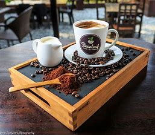

Bring your food and recipes to life with stunning food photography and styling. Amy has
styled and photographed cookbooks, social media feeds, websites and print to showcase ingredients and the
final product.
RECIPE DEVELOPMENT
Give your customers a bit more, and show them how to use your product through recipe
development. As a Nutritionist and all-time lover of baking, Amy has an expansive repertoire when it
comes to flavours, cooking and recipe development. Whether it is for your brand, website, book or event
Amy can work with you to develop the best recipes and beautiful imagery for you!

PRODUCT PHOTOGRAPHY
From the perfectly styled Instagram page, to the website and print media product photography
is vital to tell the story of your product and engage with your customers. Amy has worked extensively
with food, skincare, and ceramic companies and much more.
NUTRITION ARTICLES
Consumers are seeking answers and clarity around nutrition and food every day, from confusing
health and nutrition claims compliant with FSANZ and nutrition articles that can explain your product,
benefits and uses to your consumers. Amy is a qualified nutritionist with a Bachelor of Nutrition and
Food Science and Masters of Public Health Nutrition, and can help you with evidence-based research and copy
for your brand.
RESTAURANT MARKETING
Do you have a new menu you want to advertise, or do you simply want to show off your
beautiful space. Amy can work with you to develop stunning imagery of your space and food to tell the
story of your venue to whether it be for Instagram, website or print media and advertising.